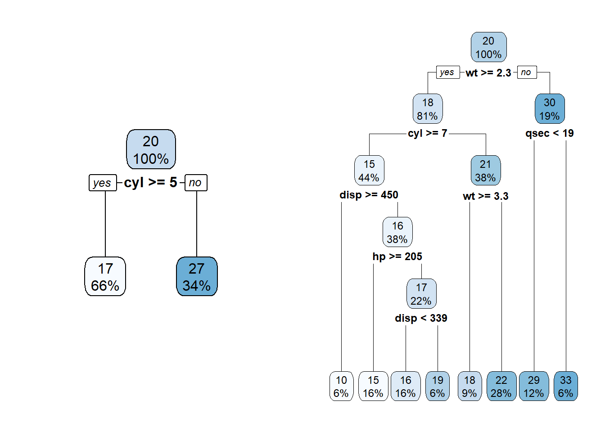
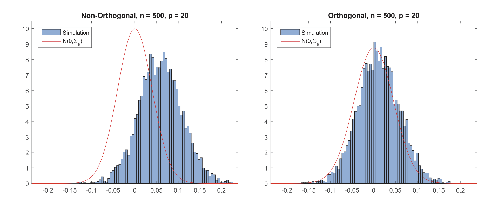
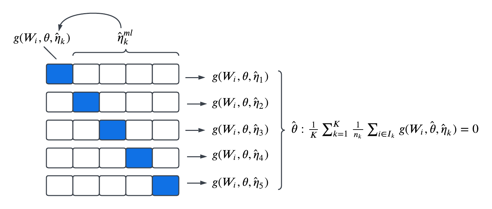
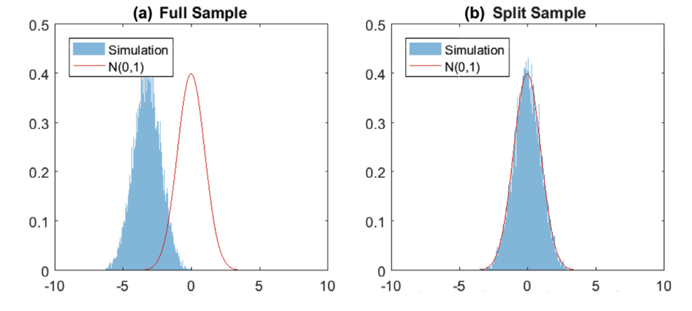

Machine learning methods have emerged as valuable tools for prediction, utilizing large and diverse datasets. These methods are designed to handle the high-dimensional challenge or discover complex relationships in the data. Take Lasso for example, which is minimizing the objective function \[
\min_\beta \left(\underbrace{\sum_{i = 1}^n (Y_i - X_i\beta)^2}_{\color{orange}{\text{OLS}}} + \underbrace{\lambda\sum_{j = 1}^p |\beta_j|}_{\color{blue}{\text{Penalty}}}\right)
\] The first component is the objective function for OLS and the second term is some penalty or “regularization” on the sum of coefficient magnitude. The penalty term is particularly helpful when \(X_i\) is high-dimensional (large \(p\)). When \(p\) is close to \(n\), OLS tends to be overfitting and captures the noises in the dataset. While in Lasso, the penalty term discourages overfitting by shrinking small parameters to zero. In fact, most of the machine learning methods are facing this problem of trade-off between overfitting and regularization. For the regression tree method, we could grow a small tree for crude fitting but is subject to regularization bias, or we could grow a large tree that is very likely to be overfitting.
Code
librarian::shelf(rpart, rpart.plot)
Warning: package 'rpart.plot' was built under R version 4.4.3
Code
data(mtcars)small.tree <-rpart(mpg ~ ., data = mtcars, cp =0.1)large.tree <-rpart(mpg ~ ., data = mtcars, minsplit =5)par(mfrow =c(1, 2))rpart.plot(small.tree)rpart.plot(large.tree)

Another feature of the machine learning methods is that the mainstream method for controlling the trade-off between overfitting and regularization is based on the fitness to the data, and it works great in prediction problems. However, these features of machine learning are not suitable for causal inference, which is more common than prediction problems in Economics. Because
Overfitting and regularization both induce bias in parameter estimators, making inference (e.g hypothesis testing) difficult
Causal inference is about evaluating counterfactuals, which is not observed. Not really make sense to use goodness of fit to control overfitting and regularization
Identification is not clear
Then how can we perform causal inference in the presence of large datasets and make use of the modern machine learning methods? The Double/Debiased Machine Learning (DML) theory developed by Chernozhukov et al. (2018) provides us with a general framework that incorporates a wide range of machine learning methods including
Ridge
Lasso
Random Forests
Boosted Trees
Gradient Boosting
Deep and Standard Neural Nets
The aggregation and cross-hybrids of the above methods
The DML solves the three challenges in causal inference with machine learning by constructing orthogonal moment conditions and making use of cross-fitting to eliminate regularization and overfitting bias, such that the parameter estimators retain \(\sqrt{n}-\)consistency. Since the theory targets the moment conditions, the identification or model assumptions can be made analogous to the normal M or GMM estimators. In the following section, we are going to start from the Frisch-Waugh-Lovell (FWL) Theorem in a linear regression setting, and generalize FWL to an orthogonality property that fits into a high-dimensional world. Our focus is how this orthogonality condition, which is the key condition in DML, allows us to obtain asymptotically normally distributed estimators. Note that our discussion here is more like some preliminary knowledge or preparations for reading Chernozhukov et al. (2018) and intuitive introductions to the DML theory. If you are interested, please read the original paper and refer to the specific details.
10.2 The Parametric Version
Consider a linear model \[
Y_i = \theta_0D_i + X_i\beta_0 + \epsilon_i, \quad \mathbb{E}[\epsilon_i|D_i, X_i] = 0
\]
Here, we separate the explanatory variables \((D_i, X_i)\) because in causal inference, we are usually interested in the effect of one treatment variable \(D_i\) and including \(p\) dimensional \(X_i\) for the exogeneity condition to hold. Let \(\theta_0\) be our parameter of interest and \(\beta_0\) be nuisance parameters. Now let’s find moment conditions that can identify \(\theta_0\), and note that essentially, we just need to find exogeneity, i.e. \(\mathbb{E}[\cdot] = 0\).
This is one of the moment conditions in the regression \(Y_i\) on \(D_i\) and \(X_i\), which is a direct translation of the exogeneity condition in our linear model because \(\mathbb{E}[\epsilon_i|D_i, X_i] = 0\) implies \(\mathbb{E}[D_i\epsilon_i|X_i] = 0\). However, this moment is “infeasible”, meaning that this moment itself is not adequate to estimate \(\theta_0\) as \(\beta_0\) is also unknown. Instead of running a full regression of \(Y_i\) on \(D_i\) and \(X_i\), an alternative feasible regression is that we have already obtained consistent estimator \(\hat\beta\) for \(\beta_0\), then we can just plug in \(\hat\beta\) and regression \(Y_i - X_i\hat\beta\) on \(D_i\).
This one suggests us to regress \(D_i\) on \(X_i\) and residualize \(D_i\) first, and run a IV regression using the residuals as instrument for \(D_i\). This moment holds because we subtracted the variation of \(X_i\) from \(D_i\) in the left parentheses and the variation in the right parentheses is just \(X_i\) and \(\epsilon_i\), which is orthogonal to \(u_i\).
This one suggests us to residualize both \(D_i\) and \(Y_i\) in the first step, and run a residual-on-residual regression in the second step. This is a Frisch-Waugh-Lovell (FWL) style regression (See Section Section 3.5 for details).
For further discussion, we can characterize the parameters in the moments. \(\theta_0\) is our parameter of interest and identified by the 4 moments. We call the rest of the parameters (\(\alpha_0\), \(\beta_0\) and \(\gamma_0\)) nuisance parameters. The nuisance parameters are not identified and we need to plug in the consistent estimators in moments in order to estimate \(\theta_0\). Given identification and estimation procedure is clear, we can think of the properties of \(\hat\theta\) by the 4 moments.
First, all 4 estimators are consistent as long as consistent nuisance estimator is plugged in, because solving the 4 sample moments gives \(\hat\theta = \frac1n\sum_i \cdot\) and consistency holds by the weak law of large numbers. But consistency is not enough for performing statistical inference on \(\theta_0\), we need root-\(n\) consistency, which is result from central limit theorem \(\frac{1}{\sqrt{n}}\sum_i(\hat\theta - \theta_0) \xrightarrow{d} N(0, V_\theta)\). We consider a general case \(g(W_i, \theta, \eta)\) such that \(\mathbb{E}[g(\cdot)] = 0\), where \(W_i = (Y_i, D_i, X_i)\) is the data, and \(\eta\) represents the nuisance parameter. For example, in moment 3 \[
g(W_i, \theta, \eta) = (D_i - X_i\alpha)(Y_i - \theta D_i - X_i\beta), \quad \text{with } \eta = (\alpha, \beta)
\]
The estimators of \(\theta_0\) is obtained by solving \[
\frac1n \sum_i g(W_i, \theta, \hat\eta) = 0
\]Note that \(\hat\eta\) is nuisance estimator of linear coefficients, which is root-\(n\) consistent by the property of OLS or GMM estimator, that is \(\sqrt{n}(\hat\eta - \eta_0) \xrightarrow{d} N(0, V_\eta)\). Assume there is some random variable \(t_i\) with \(0\) expectation such that \(\sqrt{n}(\hat\eta - \eta_0) = \sqrt{n}\left(\frac1n \sum_i t_i\right)\).1 Let \(\partial_\theta g(W_i, \theta, \eta)\) denote the partial derivative of \(g(\cdot)\) with respect to \(\theta\) and \(G_\theta = \partial_\theta g(W_i, \theta_0, \eta_0)\), \(G_\eta = \partial_\eta g(W_i, \theta_0, \eta_0)\). Then solve the sample moment by mean value theorem, we have \[
\begin{aligned}
\sqrt{n}(\hat\theta - \theta_0) &= - \left(\frac1n \sum_i \partial_\theta g(W_i, \bar\theta, \hat\eta)\right)^{-1}\frac{1}{\sqrt{n}} \sum_i g(W_i, \theta_0, \hat\eta) \\
&= - \left(\frac1n \sum_i \partial_\theta g(W_i, \bar\theta, \hat\eta)\right)^{-1} \\
&\quad \quad \times \left(\frac{1}{\sqrt{n}}\sum_i g(W_i, \theta_0, \eta_0) + \left(\frac1n \sum_i \partial_\eta g(W_i, \theta_0, \bar\eta)\right)\sqrt{n}(\hat\eta - \eta_0)\right) \\
&= - G_\theta^{-1}\frac{1}{\sqrt{n}}\sum_i(g(W_i, \theta_0, \eta_0) + G_\eta t_i) + o_p(1)
\end{aligned}
\tag{10.1}\] where \(\bar\theta\) and \(\bar\eta\) are the mean values. This result implies that \(V_\theta = G_\theta^{-1}\mathbb{E}[(g_0(W_i) + G_\eta t_i)(g_0(W_i) + G_\eta t_i)']G_\theta^{-1'}\). Thus, the impact of plugging in \(\hat\eta\) on (the asymptotic variance of) \(\hat\theta\) is captured by the term \(G_\eta t_i\).
Question: Is it possible that plugging in \(\hat\eta\) has no impact on \(\hat\theta\)?
Yes, when \(G_\eta = 0\)! In this case, \(\hat\eta\) has zero impact on \(\hat\theta\), and \(V_\theta\) reduces to \(G_\theta^{-1}\mathbb{E}[g_0(W_i)g_0(W_i)']G_\theta^{-1'}\) which is the usual variance formula for GMM estimator. In fact, this is the parametric version of the orthogonality property mentioned in the introduction. To be specific,
If a moment function \(g(W_i, \theta, \eta)\) satisfies the condition \[
G_\eta = \mathbb{E}[\partial_\eta g(W_i, \theta_0, \eta_0)] = 0
\] then 1. the nuisance estimator \(\hat\eta\) has no impact on the asymptotic variance of \(\hat\theta\).
Now we can use this property to distinguish the 4 moment conditions. For moment 1, \(\eta = \beta\), then \[
\mathbb{E}[\partial_\beta D_i(Y_i - \theta_0 D_i - X_i\beta_0)] = - \mathbb{E}[D_iX_i] \neq 0
\] unless \(D_iX_i\) has zero expectation. Therefore, moment 1 does not satisfy the orthogonal condition. Similarly, moment 2 is not orthogonal either.
For moment 4, \(\eta = (\alpha, \gamma)\), then \[\begin{aligned}
&\quad \ \mathbb{E}[\partial_{(\alpha, \gamma)}(D_i - X_i\alpha_0)((Y_i - X_i\gamma_0) - \theta_0(D_i - X_i\alpha_0))] \\
&= \mathbb{E}\begin{bmatrix} -X_i(Y_i - X_i\gamma_0 - \theta_0(D_i - X_i\alpha_0)) + (D_i - X_i\alpha_0)\theta_0X_i \\ -X_i(D_i - X_i\alpha_0) \end{bmatrix} \\
&= 0
\end{aligned}\] by the exogeneity of \(X_i\). Similarly, moment 3 also satisfies the orthogonal property. Thus, only moment 3 and 4 are free of the impact of \(\hat\eta\).
This is our first result on this orthogonality property regard the effect on asymptotic variance, but this is not enough to show how powerful this property is. If we take a closer look at this condition, by the intuition behind derivatives, it is essential saying that a local change in \(\eta\) will not deviate the moment function \(g(W_i, \theta, \eta)\) at the point \((\theta_0, \eta_0)\), which can be regarded as the robustness of \(g(\cdot)\). To make this interpretation clearer, consider \(\theta(\gamma)\) as a function of \(\gamma\), and by implicit function theorem, \[
\partial_\eta \theta(\eta_0) = - G_\theta^{-1}G_\eta = 0 \text{ if and only if } G_\eta = 0
\]
This is a first-order condition indicating that local inconsistency of \(\hat\eta\) should not affect the consistency of \(\hat\theta\). The parametric setting in this section is unable to show this property because \(\hat\eta\) and \(\hat\theta\) has the same convergence rate root-\(n\) and local inconsistency does not exist. Next, we show this first-order robustness property in the non-parametric or machine learning setting as in Chernozhukov et al. (2018) as the convergence rate of machine learning estimator are generally slower than root-\(n\).
10.3 Key Components in DML
10.3.1 Regularization Bias and Neyman Orthogonality
In the previous section, we assumed linear parametric models \[\begin{aligned}
Y_i = \theta_0D_i + X_i\beta_0 + \epsilon_i \\
D_i = X_i\alpha_0 + u_i, \quad \quad Y_i = X_i\gamma_0 + v_i
\end{aligned}\]
Linearity is hard to hold when \(X_i\) is high-dimensional and the relationship is highly-nonlinear. To relax this assumption, we can consider the following models \[\begin{aligned}
Y_i = \theta_0D_i + \beta_0(X_i) + \epsilon_i \\
D_i = \alpha_0(X_i) + u_i, \quad \quad Y_i = \gamma_0(X_i) + v_i
\end{aligned}\] Note that the nuisance functions \(\beta\), \(\alpha\) and \(\gamma\) are now functions of \(X_i\) and we will rely on machine learning methods to flexibly estimate these functions. Estimation of \(\theta_0\) follows analogously to the parametric version: obtain some machine learning estimator \(\hat\eta\), plug in the sample moments and solve for \(\hat\theta\). For example, the estimation procedure for moment 4 is
Predict \(Y_i\) with \(X_i\) using some machine learning method and obtain residuals \(\hat{v}_i\)
Predict \(D_i\) with \(X_i\) using some machine learning method and obtain residuals \(\hat{u}_i\)
Regress \(\hat{v}_i\) on \(\hat{u}_i\) and obtain the OLS estimator \(\hat\theta\)
The behavior of \(\hat\theta\) by solving moment 1 and 4 is simulated in the Figure below.

Figure 10.1
Without using orthogonal moment, \(\hat\theta\) is subject to the regularization bias in the machine learning estimator of \(\eta_0\) in the left panel, and the orthogonal moment in the right panel eliminates the bias. This is the first order robustness property we expected from the discussion in previous section. Now if we think of the orthogonality condition again \[
G_\eta = \mathbb{E}[\partial_\eta g(W_i, \theta_0, \eta_0)] = 0
\] It does not make sense in our new non-parametric setting. Because in the parametric setting, the derivative is with respect to parameters \(\eta\), which is now a function and it is unclear what a derivative with respect to a function is. In DML, this problem is solved by extending the orthogonality condition with the Gateaux derivative of a function.
Definition 10.1 (Gateaux Derivative) The Gateaux derivative of \(g(W_i, \theta_0, \eta_0)\) with respect to a function \(\eta\) is defined as \[
\partial_r g(W_i, \theta_0, \eta_0 + r(\eta - \eta_0))
\]
Then we can define the orthogonality condition in non-parametric setting2
Neyman orthogonal is a natural extension of \(G_\eta = 0\) to the case when \(\eta\) is a function or infinite-dimensional parameter. It is the key condition is DML theory which eliminates the regularization bias in plugged-in machine learning estimators. Formally, consider the estimator \(\hat\theta\) by solving \[
\frac1n \sum_i g(W_i, \theta, \hat\eta) = 0
\] with machine learning estimator \(\hat\eta\). We can expand \(\sqrt{n}(\hat\theta - \theta_0)\) follow similar steps as in Equation Equation 10.1, and by moving \(G_\theta\) to the RHS, \[
G_\theta\sqrt{n}(\hat\theta - \theta_0) = A_n + \sqrt{n}B(\hat\eta - \eta_0) + C\sqrt{n}O(\Vert\hat\eta - \eta_0\Vert^2) + o_p(1)
\tag{10.2}\]
\(A_n\) is well-behaved and approximately normally distributed under mild conditions + \(\Vert \hat\eta - \eta_0 \Vert \rightarrow 0\) (consistent in MSE sense) + cross-fitting.
\(B = \mathbb{E}[\partial_r g(W_i, \theta_0, \eta_0 + r(\eta - \eta_0))] |_{r = 0}\). For non Neyman orthogonal moments, \(B \neq 0\) in general. For Neyman orthogonal moments, \(B = 0\).
Thus, when Neyman orthogonal, for root-\(n\) consistency of \(\hat\theta\) we only need \(C\sqrt{n}O(\Vert\hat\eta - \eta_0\Vert^2) \rightarrow 0\), which requires \[
\Vert \hat\eta - \eta_0 \Vert = o_p(n^{-1/4})
\]
This is attainable rate for a wide range of machine learning estimators, which insures root-\(n\) consistency. Heuristically, we can also gain some intuition on the ambiguous term local inconsistency. From the perspective of convergence rate of an estimator, local inconsistency means that the convergence rate is slower than root-\(n\) but faster than \(n^{1/4}\).
10.3.2 Overfitting Bias and Cross-fitting
You may notice that the right panel in Figure 10.1 is not following the true distribution exactly. This is because although we eliminated regularization bias in \(\hat\eta\) with Neyman orthogonality, there is still overfitting bias, which will impact the asymptotic distribution of \(A_n\) in Equation Equation 10.2, which is the leading term in \(\sqrt{n}(\hat\theta - \theta_0)\). In previous section, we mentioned that one of the conditions for \(A_n\) to be well-behaved is to use cross-fitting. This is an algorithm that is similar to k-fold cross-validation in the machine learning literature. But instead of tuning the hyper-parameters (such as \(\lambda\) of the penalty term in Lasso), DML uses “training” sets to obtain \(\hat\eta\), and uses validation” sets to estimate \(\hat\theta\).

Figure 10.2
The benefit of cross-fitting is illustrated in the Figure below. Both panels uses moment 4 while the left panel is fitting using the whole sample and the right panel is using the cross-fitting algorithm. In fact, the right panel is presenting the final version of DML: Neyman orthogonality + Cross-fitting, which delivers consistent and asymptotically normal estimators.

Figure 10.3
10.4 Construct Neyman Orthogonality
In previous sections, we have already learned the Neyman orthogonal moment condition (moment 3 and 4) for linear regressions. But what if we want to use DML on some other moment functions, for example derived from some structural model? Since Cross-fitting is just an algorithm and can be implemented with any data sample, the main hurdle in performing DML is to construct a Neyman orthogonal moment from a non-orthogonal moment. In Chernozhukov et al. (2018) Section 2.2, various methods have been given for different models. Here, I will make a short summary based on my personal experience.
Residualize
Given a non Neyman orthogonal moment, the most intuitive way is to follow the idea of FWL, and residualize/concentrating-out the non-orthogonal moment. This idea is particularly straightforward with linear scores. For example, if we have moment 1, then we just need to residualize \(Y_i\) and \(D_i\) with the high-dimensional component \(X_i\) to get moment 4. Another example of residualizing linear score is the case of IV regression. The common moment condition with IV regression is \[
\mathbb{E}[Z_i(Y_i - \theta_0 D_i - \beta_0(X_i))] = 0
\] and residualizng gives us (See Chernozhukov et al. (2018) Section 4.2 for details) \[
\mathbb{E}[(Z_i - \tau_0(X_i))((Y_i - \gamma_0(X_i) - \theta_0(D_i - \alpha_0(X_i)))] = 0
\]
Riesz Representation
A more general way to construct Neyman orthogonality for both linear and nonlinear scores is to use the Riesz Representation
Theorem 10.1 (Riesz Representation) For a parameter \(\theta = \mathbb{E}[m(W_i, \psi)]\) where \(\psi\) is some function, there exists a unique function \(\alpha\) such that \[
\theta = \mathbb{E}[m(W_i, \psi)] = \mathbb{E}[\alpha(W_i)\psi(W_i)]
\]
With \(\alpha\) in hand, the moment condition can be found by \[
\mathbb{E}[m(W_i, \psi) + \alpha(W_i)(Y - \psi(W_i)) - \theta] = 0
\]
In some cases, this method can be easier than the residualizing method, such as in estimation of the ATE/ATT in Chernozhukov et al. (2018) Section 5.1. Suppose we have potential outcomes \[
Y_i(1) = \psi(1, X_i) + \epsilon_i, \quad Y_i(0) = \psi(0, X_i) + \epsilon_i
\]
The parameter of interest is the ATE \[
\theta = \mathbb{E}[Y(1) - Y(0)] = \mathbb{E}[\psi(1, X_i)] - \mathbb{E}[\psi(0, X_i)]
\] Then the Riesz Representation is given by the well-known Inverse Propensity Weighting \[
\mathbb{E}[\psi(1, X_i)] = \mathbb{E}\left[\frac{D_iY_i}{e(X_i)}\right] = \mathbb{E}\left[\color{red}{\frac{D_i}{e(X_i)}} \psi(1, X_i)\right] = \mathbb{E}[\color{red}{\alpha(W_i)}\psi(1, X_i)]
\] and similar for \(\mathbb{E}[\psi(0, X_i)]\). The resulting Neyman orthogonal moment is the well-known Augmented Inverse Propensity Weighting.
However, in general, this method can be “tricky” because first, we need an expectation-representation (\(\mathbb{E}[\alpha(W_i)\psi(W_i)]\)) for the parameter. And second, we need to find the function \(\alpha\), which is not an easy task. See Newey (1994) for some special cases and Ichimura and Newey (2022) for a more general setting to find \(\alpha\).
Automatic Characterization
This method is also utilizing the Riesz Representation, but the difference is that we do not need to find the analytical form of \(\alpha\). Chernozhukov et al. (2021) and Chernozhukov, Newey, and Singh (2022) find that \[
\alpha = \arg \min_{a(W_i)}\mathbb{E}[a^2(W_i) - 2m(W_i, a)]
\] and this optimization problem can be solved by some algorithm, which means that even if \(\alpha\) is unknown, it can still be estimated.
10.5 The DoubleML Package
The theoretical components developed in this chapter — Neyman orthogonality and cross-fitting — are implemented in the DoubleML R package (Bach et al. 2024), which provides a unified interface for Double/Debiased Machine Learning. The package builds on the mlr3 ecosystem, allowing the user to plug in any supervised learner (random forests, boosted trees, neural networks, etc.) as the first-stage machine learning method for estimating nuisance functions.
The code below illustrates the Partially Linear Regression (PLR) model, which corresponds directly to moment 4 from our parametric discussion. The DoubleMLPLR class residualizes both \(Y_i\) and \(D_i\) against \(X_i\) using the supplied learners (ml_l for \(Y \sim X\) and ml_m for \(D \sim X\)), then estimates \(\theta_0\) from the residual-on-residual regression. Internally, the package performs cross-fitting (5-fold by default) to eliminate overfitting bias, exactly as described in the cross-fitting section above. The resulting estimator is \(\sqrt{n}\)-consistent and asymptotically normal under the conditions we derived, enabling standard confidence intervals and hypothesis tests.
Code
library(DoubleML)library(mlr3)library(mlr3learners)# Partially Linear Regression Model (corresponds to moment 4)set.seed(42)n <-500; p <-10X <-matrix(rnorm(n * p), ncol = p)D <- X[,1] +rnorm(n)Y <-1*D + X[,1]^2+ X[,2] +rnorm(n) # true theta = 1dml_data <- DoubleMLData$new(data =data.frame(Y = Y, D = D, X),y_col ="Y", d_cols ="D")ml_l <-lrn("regr.ranger", num.trees =500)ml_m <-lrn("regr.ranger", num.trees =500)dml_plr <- DoubleMLPLR$new(dml_data, ml_l, ml_m)dml_plr$fit()
INFO [16:03:55.386] [mlr3] Applying learner 'regr.ranger' on task 'nuis_l' (iter 1/5)
INFO [16:03:56.166] [mlr3] Applying learner 'regr.ranger' on task 'nuis_l' (iter 2/5)
INFO [16:03:56.359] [mlr3] Applying learner 'regr.ranger' on task 'nuis_l' (iter 3/5)
INFO [16:03:56.532] [mlr3] Applying learner 'regr.ranger' on task 'nuis_l' (iter 4/5)
INFO [16:03:56.701] [mlr3] Applying learner 'regr.ranger' on task 'nuis_l' (iter 5/5)
INFO [16:03:57.350] [mlr3] Applying learner 'regr.ranger' on task 'nuis_m' (iter 1/5)
INFO [16:03:57.681] [mlr3] Applying learner 'regr.ranger' on task 'nuis_m' (iter 2/5)
INFO [16:03:57.853] [mlr3] Applying learner 'regr.ranger' on task 'nuis_m' (iter 3/5)
INFO [16:03:58.021] [mlr3] Applying learner 'regr.ranger' on task 'nuis_m' (iter 4/5)
INFO [16:03:58.191] [mlr3] Applying learner 'regr.ranger' on task 'nuis_m' (iter 5/5)
Code
dml_plr$summary()
Estimates and significance testing of the effect of target variables
Estimate. Std. Error t value Pr(>|t|)
D 1.02348 0.05635 18.16 <2e-16 ***
---
Signif. codes: 0 '***' 0.001 '**' 0.01 '*' 0.05 '.' 0.1 ' ' 1
Because the nuisance functions \(\gamma_0(X_i)\) and \(\alpha_0(X_i)\) are estimated with random forests (a flexible ML method satisfying the \(o_p(n^{-1/4})\) rate requirement), and the PLR score is Neyman orthogonal by construction, the DoubleML package delivers valid inference on \(\theta_0\) even when the true relationships are nonlinear — precisely the promise of the DML framework.
Further Reading
Chernozhukov et al. (2018) — the original DML paper establishing the theoretical framework.
Chernozhukov et al. (2024) — a practical guide to applied causal inference powered by ML and AI, with worked examples.
Chernozhukov, Newey, and Singh (2022) — the automatic debiased machine learning framework, which eliminates the need to derive Neyman orthogonal moments analytically.
Bach et al. (2024) — the DoubleML R and Python package documentation and methodological overview.
10.6 Conclusion
In this section, we introduced the DML theory and discussed how the Neyman orthogonality condition and cross-fitting algorithm can eliminate the regularization and overfitting bias in machine learning estimators and produce root-\(n\) consistent estimator for causal inference. We also briefly summarized some new developments in constructing Neyman orthogonality from a non-orthogonal moment, such that DML is possible for general moments. Finally, I would like to mention a straightforward application of DML that adds to the applications given in Chernozhukov et al. (2018), which is the Heckman selection model. Specifically, the Mills ratio in Heckman selection model can be estimated using machine learning methods without making the assumption that the conditional probability of choice is normally distributed, or when there is high-dimensional \(X_i\). And as the Mills ratio is just a linear component in the regression, the residualizing method directly applies.
Bach, Philipp, Victor Chernozhukov, Malte S Kurz, and Martin Spindler. 2024. “DoubleML: An Object-Oriented Implementation of Double Machine Learning in R.”Journal of Statistical Software 108 (3): 1–56.
Chernozhukov, Victor, Denis Chetverikov, Mert Demirer, Esther Duflo, Christian Hansen, Whitney Newey, and James Robins. 2018. “Double/Debiased Machine Learning for Treatment and Structural Parameters.” Oxford University Press Oxford, UK.
Chernozhukov, Victor, Christian Hansen, Nathan Kallus, Martin Spindler, and Vasilis Syrgkanis. 2024. Applied Causal Inference Powered by ML and AI. Online textbook.
Chernozhukov, Victor, Whitney K Newey, Victor Quintas-Martinez, and Vasilis Syrgkanis. 2021. “Automatic Debiased Machine Learning via Neural Nets for Generalized Linear Regression.”arXiv Preprint arXiv:2104.14737.
Chernozhukov, Victor, Whitney K Newey, and Rahul Singh. 2022. “Automatic Debiased Machine Learning of Causal and Structural Effects.”Econometrica 90 (3): 967–1027.
Ichimura, Hidehiko, and Whitney K Newey. 2022. “The Influence Function of Semiparametric Estimators.”Quantitative Economics 13 (1): 29–61.
Newey, Whitney K. 1994. “The Asymptotic Variance of Semiparametric Estimators.”Econometrica: Journal of the Econometric Society, 1349–82.
\(t_i\) is called the influence function of \(\hat\eta\).↩︎
The Neyman orthogonality is a bit different from the one presented in Chernozhukov et al. (2018) because we exchanged the order of derivative and expectation, which is allowed under regularity conditions.↩︎
Source Code
# Double/Debiased Machine Learning (DML) {#sec-DML}## A General Motivation and IntroductionMachine learning methods have emerged as valuable tools for prediction, utilizing large and diverse datasets. These methods are designed to handle the high-dimensional challenge or discover complex relationships in the data. Take Lasso for example, which is minimizing the objective function$$\min_\beta \left(\underbrace{\sum_{i = 1}^n (Y_i - X_i\beta)^2}_{\color{orange}{\text{OLS}}} + \underbrace{\lambda\sum_{j = 1}^p |\beta_j|}_{\color{blue}{\text{Penalty}}}\right)$$The first component is the objective function for OLS and the second term is some <span style="color: blue;">penalty or "regularization"</span> on the sum of coefficient magnitude. The penalty term is particularly helpful when $X_i$ is high-dimensional (large $p$). When $p$ is close to $n$, OLS tends to be <span style="color: orange;">overfitting</span> and captures the noises in the dataset. While in Lasso, the penalty term discourages overfitting by shrinking small parameters to zero. In fact, most of the machine learning methods are facing this problem of trade-off between overfitting and regularization. For the regression tree method, we could grow a small tree for crude fitting but is subject to regularization bias, or we could grow a large tree that is very likely to be overfitting.```{r}#| message: falselibrarian::shelf(rpart, rpart.plot)data(mtcars)small.tree <-rpart(mpg ~ ., data = mtcars, cp =0.1)large.tree <-rpart(mpg ~ ., data = mtcars, minsplit =5)par(mfrow =c(1, 2))rpart.plot(small.tree)rpart.plot(large.tree)```Another feature of the machine learning methods is that the mainstream method for controlling the trade-off between overfitting and regularization is based on the fitness to the data, and it works great in prediction problems. However, these features of machine learning are not suitable for causal inference, which is more common than prediction problems in Economics. Because1. Overfitting and regularization both induce bias in parameter estimators, making inference (e.g hypothesis testing) difficult2. Causal inference is about evaluating counterfactuals, which is not observed. Not really make sense to use goodness of fit to control overfitting and regularization3. Identification is not clearThen how can we perform causal inference in the presence of large datasets and make use of the modern machine learning methods? The Double/Debiased Machine Learning (DML) theory developed by @chernozhukov2018double provides us with a general framework that incorporates a wide range of machine learning methods including- Ridge- Lasso- Random Forests- Boosted Trees- Gradient Boosting- Deep and Standard Neural Nets- The aggregation and cross-hybrids of the above methodsThe DML solves the three challenges in causal inference with machine learning by constructing orthogonal moment conditions and making use of cross-fitting to eliminate regularization and overfitting bias, such that the parameter estimators retain $\sqrt{n}-$consistency. Since the theory targets the moment conditions, the identification or model assumptions can be made analogous to the normal M or GMM estimators. In the following section, we are going to start from the Frisch-Waugh-Lovell (FWL) Theorem in a linear regression setting, and generalize FWL to an orthogonality property that fits into a high-dimensional world. Our focus is how this orthogonality condition, which is the key condition in DML, allows us to obtain asymptotically normally distributed estimators. Note that our discussion here is more like some preliminary knowledge or preparations for reading @chernozhukov2018double and intuitive introductions to the DML theory. If you are interested, please read the original paper and refer to the specific details.## The Parametric VersionConsider a linear model$$Y_i = \theta_0D_i + X_i\beta_0 + \epsilon_i, \quad \mathbb{E}[\epsilon_i|D_i, X_i] = 0$$Here, we separate the explanatory variables $(D_i, X_i)$ because in causal inference, we are usually interested in the effect of one treatment variable $D_i$ and including $p$ dimensional $X_i$ for the exogeneity condition to hold. Let $\theta_0$ be our parameter of interest and $\beta_0$ be nuisance parameters. Now let's find moment conditions that can identify $\theta_0$, and note that essentially, we just need to find exogeneity, i.e. $\mathbb{E}[\cdot] = 0$.1. $\mathbb{E}[D_i(Y_i - \theta_0D_i - X_i\beta_0)] = 0$2. $\mathbb{E}[(D_i - X_i\alpha_0)(Y_i - \theta_0D_i)] = 0$3. $\mathbb{E}[(D_i - X_i\alpha_0)(Y_i - \theta_0D_i - X_i\beta_0)] = 0$4. $\mathbb{E}[(D_i - X_i\alpha_0)((Y_i - X_i\gamma_0) - \theta_0(D_i - X_i\alpha_0))] = 0$where $\alpha_0$ and $\gamma_0$ are the coefficients in the regressions$$D_i = X_i\alpha_0 + u_i, \quad \quad Y_i = X_i\gamma_0 + v_i$$Let's check the moment conditions one by one.1. $\mathbb{E}[D_i(Y_i - \theta_0D_i - X_i\beta_0)] = 0$This is **one of** the moment conditions in the regression $Y_i$ on $D_i$ and $X_i$, which is a direct translation of the exogeneity condition in our linear model because $\mathbb{E}[\epsilon_i|D_i, X_i] = 0$ implies $\mathbb{E}[D_i\epsilon_i|X_i] = 0$. However, this moment is "**infeasible**", meaning that this moment itself is not adequate to estimate $\theta_0$ as $\beta_0$ is also unknown. Instead of running a full regression of $Y_i$ on $D_i$ and $X_i$, an alternative feasible regression is that we have already obtained consistent estimator $\hat\beta$ for $\beta_0$, then we can just plug in $\hat\beta$ and regression $Y_i - X_i\hat\beta$ on $D_i$.2. $\mathbb{E}[(D_i - X_i\alpha_0)(Y_i - \theta_0D_i)] = 0$This one suggests us to regress $D_i$ on $X_i$ and residualize $D_i$ first, and run a IV regression using the residuals as instrument for $D_i$. This moment holds because we subtracted the variation of $X_i$ from $D_i$ in the left parentheses and the variation in the right parentheses is just $X_i$ and $\epsilon_i$, which is orthogonal to $u_i$.3. $\mathbb{E}[(D_i - X_i\alpha_0)(Y_i - \theta_0D_i - X_i\beta_0)] = 0$Similar to 2, but we also included covariates $X_i$ in the IV regression. Also infeasible and we need to plug in $\hat\beta$.4. $\mathbb{E}[(D_i - X_i\alpha_0)((Y_i - X_i\gamma_0) - \theta_0(D_i - X_i\alpha_0))] = 0$This one suggests us to residualize both $D_i$ and $Y_i$ in the first step, and run a residual-on-residual regression in the second step. **This is a Frisch-Waugh-Lovell (FWL) style regression** (See Section @sec-FWL for details). For further discussion, we can characterize the parameters in the moments. $\theta_0$ is our parameter of interest and identified by the 4 moments. We call the rest of the parameters ($\alpha_0$, $\beta_0$ and $\gamma_0$) **nuisance** parameters. The nuisance parameters are not identified and we need to plug in the consistent estimators in moments in order to estimate $\theta_0$. Given identification and estimation procedure is clear, we can think of the properties of $\hat\theta$ by the 4 moments.First, all 4 estimators are consistent as long as consistent nuisance estimator is plugged in, because solving the 4 sample moments gives $\hat\theta = \frac1n\sum_i \cdot$ and consistency holds by the weak law of large numbers. But consistency is not enough for performing statistical inference on $\theta_0$, we need **root-$n$ consistency**, which is result from central limit theorem $\frac{1}{\sqrt{n}}\sum_i(\hat\theta - \theta_0) \xrightarrow{d} N(0, V_\theta)$. We consider a general case $g(W_i, \theta, \eta)$ such that $\mathbb{E}[g(\cdot)] = 0$, where $W_i = (Y_i, D_i, X_i)$ is the data, and $\eta$ represents the nuisance parameter. For example, in moment 3$$g(W_i, \theta, \eta) = (D_i - X_i\alpha)(Y_i - \theta D_i - X_i\beta), \quad \text{with } \eta = (\alpha, \beta)$$The estimators of $\theta_0$ is obtained by solving$$\frac1n \sum_i g(W_i, \theta, \hat\eta) = 0$$**Note that $\hat\eta$ is nuisance estimator of linear coefficients, which is root-$n$ consistent by the property of OLS or GMM estimator**, that is $\sqrt{n}(\hat\eta - \eta_0) \xrightarrow{d} N(0, V_\eta)$. Assume there is some random variable $t_i$ with $0$ expectation such that $\sqrt{n}(\hat\eta - \eta_0) = \sqrt{n}\left(\frac1n \sum_i t_i\right)$.[^inf] Let $\partial_\theta g(W_i, \theta, \eta)$ denote the partial derivative of $g(\cdot)$ with respect to $\theta$ and $G_\theta = \partial_\theta g(W_i, \theta_0, \eta_0)$, $G_\eta = \partial_\eta g(W_i, \theta_0, \eta_0)$. Then solve the sample moment by mean value theorem, we have$$\begin{aligned}\sqrt{n}(\hat\theta - \theta_0) &= - \left(\frac1n \sum_i \partial_\theta g(W_i, \bar\theta, \hat\eta)\right)^{-1}\frac{1}{\sqrt{n}} \sum_i g(W_i, \theta_0, \hat\eta) \\&= - \left(\frac1n \sum_i \partial_\theta g(W_i, \bar\theta, \hat\eta)\right)^{-1} \\ &\quad \quad \times \left(\frac{1}{\sqrt{n}}\sum_i g(W_i, \theta_0, \eta_0) + \left(\frac1n \sum_i \partial_\eta g(W_i, \theta_0, \bar\eta)\right)\sqrt{n}(\hat\eta - \eta_0)\right) \\&= - G_\theta^{-1}\frac{1}{\sqrt{n}}\sum_i(g(W_i, \theta_0, \eta_0) + G_\eta t_i) + o_p(1)\end{aligned}$$ {#eq-asymdist}where $\bar\theta$ and $\bar\eta$ are the mean values. This result implies that $V_\theta = G_\theta^{-1}\mathbb{E}[(g_0(W_i) + G_\eta t_i)(g_0(W_i) + G_\eta t_i)']G_\theta^{-1'}$. Thus, the impact of plugging in $\hat\eta$ on (the asymptotic variance of) $\hat\theta$ is captured by the term $G_\eta t_i$. [^inf]: $t_i$ is called the influence function of $\hat\eta$.**Question: Is it possible that plugging in $\hat\eta$ has no impact on $\hat\theta$?****Yes, when $G_\eta = 0$!** In this case, $\hat\eta$ has zero impact on $\hat\theta$, and $V_\theta$ reduces to $G_\theta^{-1}\mathbb{E}[g_0(W_i)g_0(W_i)']G_\theta^{-1'}$ which is the usual variance formula for GMM estimator. In fact, this is the **parametric version of the orthogonality property** mentioned in the introduction. To be specific,> If a moment function $g(W_i, \theta, \eta)$ satisfies the condition$$G_\eta = \mathbb{E}[\partial_\eta g(W_i, \theta_0, \eta_0)] = 0$$then > 1. the nuisance estimator $\hat\eta$ has no impact on the asymptotic variance of $\hat\theta$.Now we can use this property to distinguish the 4 moment conditions. For moment 1, $\eta = \beta$, then$$\mathbb{E}[\partial_\beta D_i(Y_i - \theta_0 D_i - X_i\beta_0)] = - \mathbb{E}[D_iX_i] \neq 0$$unless $D_iX_i$ has zero expectation. Therefore, moment 1 does not satisfy the orthogonal condition. Similarly, moment 2 is not orthogonal either.For moment 4, $\eta = (\alpha, \gamma)$, then$$\begin{aligned}&\quad \ \mathbb{E}[\partial_{(\alpha, \gamma)}(D_i - X_i\alpha_0)((Y_i - X_i\gamma_0) - \theta_0(D_i - X_i\alpha_0))]\\&= \mathbb{E}\begin{bmatrix} -X_i(Y_i - X_i\gamma_0 - \theta_0(D_i - X_i\alpha_0)) + (D_i - X_i\alpha_0)\theta_0X_i \\ -X_i(D_i - X_i\alpha_0) \end{bmatrix} \\&= 0\end{aligned}$$by the exogeneity of $X_i$. Similarly, moment 3 also satisfies the orthogonal property. Thus, only moment 3 and 4 are free of the impact of $\hat\eta$.This is our first result on this orthogonality property regard the effect on asymptotic variance, but this is not enough to show how powerful this property is. If we take a closer look at this condition, by the intuition behind derivatives, it is essential saying that a **local** change in $\eta$ will not deviate the moment function $g(W_i, \theta, \eta)$ at the point $(\theta_0, \eta_0)$, which can be regarded as the robustness of $g(\cdot)$. To make this interpretation clearer, consider $\theta(\gamma)$ as a function of $\gamma$, and by implicit function theorem,$$\partial_\eta \theta(\eta_0) = - G_\theta^{-1}G_\eta = 0 \text{ if and only if } G_\eta = 0$$This is a first-order condition indicating that **local** inconsistency of $\hat\eta$ should not affect the consistency of $\hat\theta$. The parametric setting in this section is unable to show this property because $\hat\eta$ and $\hat\theta$ has the same convergence rate root-$n$ and local inconsistency does not exist. Next, we show this first-order robustness property in the non-parametric or machine learning setting as in @chernozhukov2018double as the convergence rate of machine learning estimator are generally slower than root-$n$.## Key Components in DML### Regularization Bias and Neyman OrthogonalityIn the previous section, we assumed linear parametric models$$\begin{aligned}Y_i = \theta_0D_i + X_i\beta_0 + \epsilon_i \\D_i = X_i\alpha_0 + u_i, \quad \quad Y_i = X_i\gamma_0 + v_i\end{aligned}$$Linearity is hard to hold when $X_i$ is high-dimensional and the relationship is highly-nonlinear. To relax this assumption, we can consider the following models$$\begin{aligned}Y_i = \theta_0D_i + \beta_0(X_i) + \epsilon_i \\D_i = \alpha_0(X_i) + u_i, \quad \quad Y_i = \gamma_0(X_i) + v_i\end{aligned}$$Note that the nuisance functions $\beta$, $\alpha$ and $\gamma$ are now functions of $X_i$ and we will rely on machine learning methods to flexibly estimate these functions. Estimation of $\theta_0$ follows analogously to the parametric version: obtain some machine learning estimator $\hat\eta$, plug in the sample moments and solve for $\hat\theta$. For example, the estimation procedure for moment 4 is- Predict $Y_i$ with $X_i$ using some machine learning method and obtain residuals $\hat{v}_i$- Predict $D_i$ with $X_i$ using some machine learning method and obtain residuals $\hat{u}_i$- Regress $\hat{v}_i$ on $\hat{u}_i$ and obtain the OLS estimator $\hat\theta$The behavior of $\hat\theta$ by solving moment 1 and 4 is simulated in the Figure below.```{r}#| label: fig-sim1#| echo: false#| out-width: "100%"knitr::include_graphics('fig/ch10_dml/sim1.png')```Without using orthogonal moment, $\hat\theta$ is subject to the regularization bias in the machine learning estimator of $\eta_0$ in the left panel, and the orthogonal moment in the right panel eliminates the bias. **This is the first order robustness property we expected from the discussion in previous section.** Now if we think of the orthogonality condition again$$G_\eta = \mathbb{E}[\partial_\eta g(W_i, \theta_0, \eta_0)] = 0$$It does not make sense in our new non-parametric setting. Because in the parametric setting, the derivative is with respect to parameters $\eta$, which is now a function and it is unclear what a derivative with respect to a function is. In DML, this problem is solved by extending the orthogonality condition with the Gateaux derivative of a function.::: {#def-gateaux}## Gateaux DerivativeThe Gateaux derivative of $g(W_i, \theta_0, \eta_0)$ with respect to a function $\eta$ is defined as$$\partial_r g(W_i, \theta_0, \eta_0 + r(\eta - \eta_0))$$:::Then we can define the orthogonality condition in non-parametric setting[^neyman][^neyman]: The Neyman orthogonality is a bit different from the one presented in @chernozhukov2018double because we exchanged the order of derivative and expectation, which is allowed under regularity conditions.::: {#def-neyman}## Neyman Orthogonality$$\mathbb{E}[\partial_r g(W_i, \theta_0, \eta_0 + r(\eta - \eta_0))] |_{r = 0} = 0 \ \forall \eta$$:::Neyman orthogonal is a natural extension of $G_\eta = 0$ to the case when $\eta$ is a function or infinite-dimensional parameter. It is the key condition is DML theory which eliminates the regularization bias in plugged-in machine learning estimators. Formally, consider the estimator $\hat\theta$ by solving$$\frac1n \sum_i g(W_i, \theta, \hat\eta) = 0$$with machine learning estimator $\hat\eta$. We can expand $\sqrt{n}(\hat\theta - \theta_0)$ follow similar steps as in Equation @eq-asymdist, and by moving $G_\theta$ to the RHS,$$G_\theta\sqrt{n}(\hat\theta - \theta_0) = A_n + \sqrt{n}B(\hat\eta - \eta_0) + C\sqrt{n}O(\Vert\hat\eta - \eta_0\Vert^2) + o_p(1)$$ {#eq-expand}- $A_n$ is well-behaved and approximately normally distributed under mild conditions + $\Vert \hat\eta - \eta_0 \Vert \rightarrow 0$ (consistent in MSE sense) + **cross-fitting**.- $B = \mathbb{E}[\partial_r g(W_i, \theta_0, \eta_0 + r(\eta - \eta_0))] |_{r = 0}$. For non Neyman orthogonal moments, $B \neq 0$ in general. For Neyman orthogonal moments, $B = 0$.- Thus, when Neyman orthogonal, for root-$n$ consistency of $\hat\theta$ we only need $C\sqrt{n}O(\Vert\hat\eta - \eta_0\Vert^2) \rightarrow 0$, which requires$$\Vert \hat\eta - \eta_0 \Vert = o_p(n^{-1/4})$$This is attainable rate for a wide range of machine learning estimators, which insures root-$n$ consistency. Heuristically, we can also gain some intuition on the ambiguous term **local** inconsistency. From the perspective of convergence rate of an estimator, **local** inconsistency means that the convergence rate is slower than root-$n$ but **faster than $n^{1/4}$**. ### Overfitting Bias and Cross-fittingYou may notice that the right panel in @fig-sim1 is not following the true distribution exactly. This is because although we eliminated regularization bias in $\hat\eta$ with Neyman orthogonality, there is still overfitting bias, which will impact the asymptotic distribution of $A_n$ in Equation @eq-expand, which is the leading term in $\sqrt{n}(\hat\theta - \theta_0)$. In previous section, we mentioned that one of the conditions for $A_n$ to be well-behaved is to use **cross-fitting**. This is an algorithm that is similar to k-fold cross-validation in the machine learning literature. But instead of tuning the hyper-parameters (such as $\lambda$ of the penalty term in Lasso), DML uses "training" sets to obtain $\hat\eta$, and uses validation" sets to estimate $\hat\theta$.```{r}#| label: fig-crossfit#| echo: false#| out-width: "100%"knitr::include_graphics('fig/ch10_dml/crossfit.png')```The benefit of cross-fitting is illustrated in the Figure below. Both panels uses moment 4 while the left panel is fitting using the whole sample and the right panel is using the cross-fitting algorithm. In fact, the right panel is presenting the final version of DML: **Neyman orthogonality + Cross-fitting**, which delivers consistent and asymptotically normal estimators.```{r}#| label: fig-sim2#| echo: false#| out-width: "100%"knitr::include_graphics('fig/ch10_dml/sim2.png')```## Construct Neyman OrthogonalityIn previous sections, we have already learned the Neyman orthogonal moment condition (moment 3 and 4) for linear regressions. But what if we want to use DML on some other moment functions, for example derived from some structural model? Since Cross-fitting is just an algorithm and can be implemented with any data sample, the main hurdle in performing DML is to construct a Neyman orthogonal moment from a non-orthogonal moment. In @chernozhukov2018double Section 2.2, various methods have been given for different models. Here, I will make a short summary based on my personal experience.### Residualize {-}Given a non Neyman orthogonal moment, the most intuitive way is to follow the idea of FWL, and residualize/concentrating-out the non-orthogonal moment. This idea is particularly straightforward with linear scores. For example, if we have moment 1, then we just need to residualize $Y_i$ and $D_i$ with the high-dimensional component $X_i$ to get moment 4. Another example of residualizing linear score is the case of IV regression. The common moment condition with IV regression is $$\mathbb{E}[Z_i(Y_i - \theta_0 D_i - \beta_0(X_i))] = 0$$and residualizng gives us (See @chernozhukov2018double Section 4.2 for details)$$\mathbb{E}[(Z_i - \tau_0(X_i))((Y_i - \gamma_0(X_i) - \theta_0(D_i - \alpha_0(X_i)))] = 0$$### Riesz Representation {-}A more general way to construct Neyman orthogonality for both linear and nonlinear scores is to use the Riesz Representation::: {#thm-rr}## Riesz RepresentationFor a parameter $\theta = \mathbb{E}[m(W_i, \psi)]$ where $\psi$ is some function, there exists a unique function $\alpha$ such that$$\theta = \mathbb{E}[m(W_i, \psi)] = \mathbb{E}[\alpha(W_i)\psi(W_i)]$$:::With $\alpha$ in hand, the moment condition can be found by$$\mathbb{E}[m(W_i, \psi) + \alpha(W_i)(Y - \psi(W_i)) - \theta] = 0$$In some cases, this method can be easier than the residualizing method, such as in estimation of the ATE/ATT in @chernozhukov2018double Section 5.1. Suppose we have potential outcomes $$Y_i(1) = \psi(1, X_i) + \epsilon_i, \quad Y_i(0) = \psi(0, X_i) + \epsilon_i$$The parameter of interest is the ATE$$\theta = \mathbb{E}[Y(1) - Y(0)] = \mathbb{E}[\psi(1, X_i)] - \mathbb{E}[\psi(0, X_i)]$$Then the Riesz Representation is given by the well-known Inverse Propensity Weighting $$\mathbb{E}[\psi(1, X_i)] = \mathbb{E}\left[\frac{D_iY_i}{e(X_i)}\right] = \mathbb{E}\left[\color{red}{\frac{D_i}{e(X_i)}} \psi(1, X_i)\right] = \mathbb{E}[\color{red}{\alpha(W_i)}\psi(1, X_i)]$$and similar for $\mathbb{E}[\psi(0, X_i)]$. The resulting Neyman orthogonal moment is the well-known Augmented Inverse Propensity Weighting.However, in general, this method can be "tricky" because first, we need an expectation-representation ($\mathbb{E}[\alpha(W_i)\psi(W_i)]$) for the parameter. And second, we need to find the function $\alpha$, which is not an easy task. See @newey1994asymptotic for some special cases and @ichimura2022influence for a more general setting to find $\alpha$.### Automatic Characterization {-}This method is also utilizing the Riesz Representation, but the difference is that we do not need to find the analytical form of $\alpha$. @chernozhukov2021automatic and @chernozhukov2022automatic find that$$\alpha = \arg \min_{a(W_i)}\mathbb{E}[a^2(W_i) - 2m(W_i, a)]$$and this optimization problem can be solved by some algorithm, which means that even if $\alpha$ is unknown, it can still be estimated.## The `DoubleML` PackageThe theoretical components developed in this chapter --- Neyman orthogonality and cross-fitting --- are implemented in the [`DoubleML`](https://docs.doubleml.org/) R package [@bach2024doubleml], which provides a unified interface for Double/Debiased Machine Learning. The package builds on the `mlr3` ecosystem, allowing the user to plug in any supervised learner (random forests, boosted trees, neural networks, etc.) as the first-stage machine learning method for estimating nuisance functions.The code below illustrates the Partially Linear Regression (PLR) model, which corresponds directly to **moment 4** from our parametric discussion. The `DoubleMLPLR` class residualizes both $Y_i$ and $D_i$ against $X_i$ using the supplied learners (`ml_l` for $Y \sim X$ and `ml_m` for $D \sim X$), then estimates $\theta_0$ from the residual-on-residual regression. Internally, the package performs cross-fitting (5-fold by default) to eliminate overfitting bias, exactly as described in the cross-fitting section above. The resulting estimator is $\sqrt{n}$-consistent and asymptotically normal under the conditions we derived, enabling standard confidence intervals and hypothesis tests.```{r}#| label: doubleml-plr#| code-fold: true#| message: false#| warning: falselibrary(DoubleML)library(mlr3)library(mlr3learners)# Partially Linear Regression Model (corresponds to moment 4)set.seed(42)n <-500; p <-10X <-matrix(rnorm(n * p), ncol = p)D <- X[,1] +rnorm(n)Y <-1*D + X[,1]^2+ X[,2] +rnorm(n) # true theta = 1dml_data <- DoubleMLData$new(data =data.frame(Y = Y, D = D, X),y_col ="Y", d_cols ="D")ml_l <-lrn("regr.ranger", num.trees =500)ml_m <-lrn("regr.ranger", num.trees =500)dml_plr <- DoubleMLPLR$new(dml_data, ml_l, ml_m)dml_plr$fit()dml_plr$summary()```Because the nuisance functions $\gamma_0(X_i)$ and $\alpha_0(X_i)$ are estimated with random forests (a flexible ML method satisfying the $o_p(n^{-1/4})$ rate requirement), and the PLR score is Neyman orthogonal by construction, the `DoubleML` package delivers valid inference on $\theta_0$ even when the true relationships are nonlinear --- precisely the promise of the DML framework.::: {.callout-note}## Further Reading- @chernozhukov2018double --- the original DML paper establishing the theoretical framework.- @chernozhukov2024applied --- a practical guide to applied causal inference powered by ML and AI, with worked examples.- @chernozhukov2022automatic --- the automatic debiased machine learning framework, which eliminates the need to derive Neyman orthogonal moments analytically.- @bach2024doubleml --- the `DoubleML` R and Python package documentation and methodological overview.:::## ConclusionIn this section, we introduced the DML theory and discussed how the Neyman orthogonality condition and cross-fitting algorithm can eliminate the regularization and overfitting bias in machine learning estimators and produce root-$n$ consistent estimator for causal inference. We also briefly summarized some new developments in constructing Neyman orthogonality from a non-orthogonal moment, such that DML is possible for general moments. Finally, I would like to mention a straightforward application of DML that adds to the applications given in @chernozhukov2018double, which is the Heckman selection model. Specifically, the Mills ratio in Heckman selection model can be estimated using machine learning methods without making the assumption that the conditional probability of choice is normally distributed, or when there is high-dimensional $X_i$. And as the Mills ratio is just a linear component in the regression, the residualizing method directly applies.